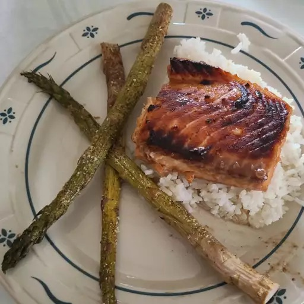

Maple Salmon

Description
Salmon is both a tasty and healthy fish. To make it even tastier (if less healthy), add a maple glaze.
This is a simple recipe, although remember to budget some time for mariniation in order to get the best flavor.
Many vegetables from aspargus to broccoli complement the salmon well, as does some rice or quinoa.
Choose your favorite sides, and make them while the salmon marinates!
Ingredients:
- 1/4 cup of maple syrup
- 2 tablespoons soy sauce
- 1 clove garlic, minced
- 1/4 teaspoon garlic salt
- 1/8 teaspon ground black pepper
- 1 pound salmon
Steps:
- Mix all the ingredients but the salmon together to make the marinade.
- Cut the salmon into four equal pieces.
- Place the salmon in a shallow baking dish and pour in the marinade. Cover the dish and place it in the refrigerator.
- Preheat the oven to 400 degrees Fahrenheit and wait at least 30 minutes for the salmon to mariniate.
- After at least 30 minutes have passed, uncover the dish, place it in the oven, and let bake for around 20 minutes. Take out the salmon when it is flaky.
Recipe credit: allrecipes.com
Home